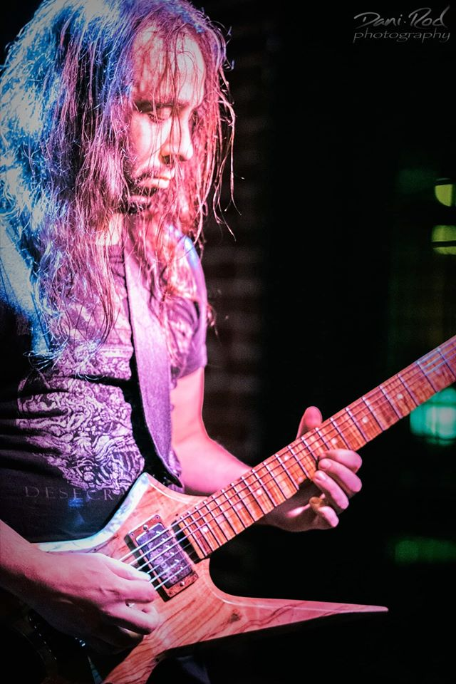
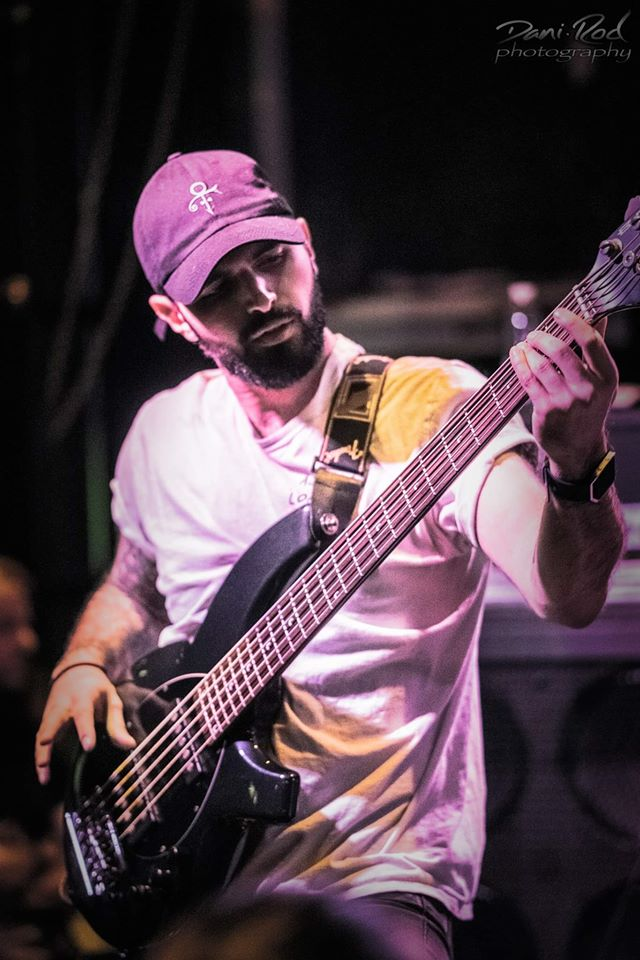
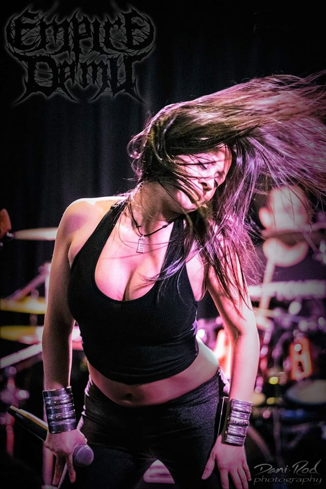
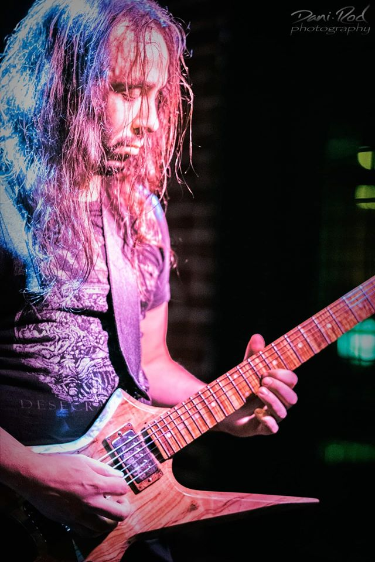
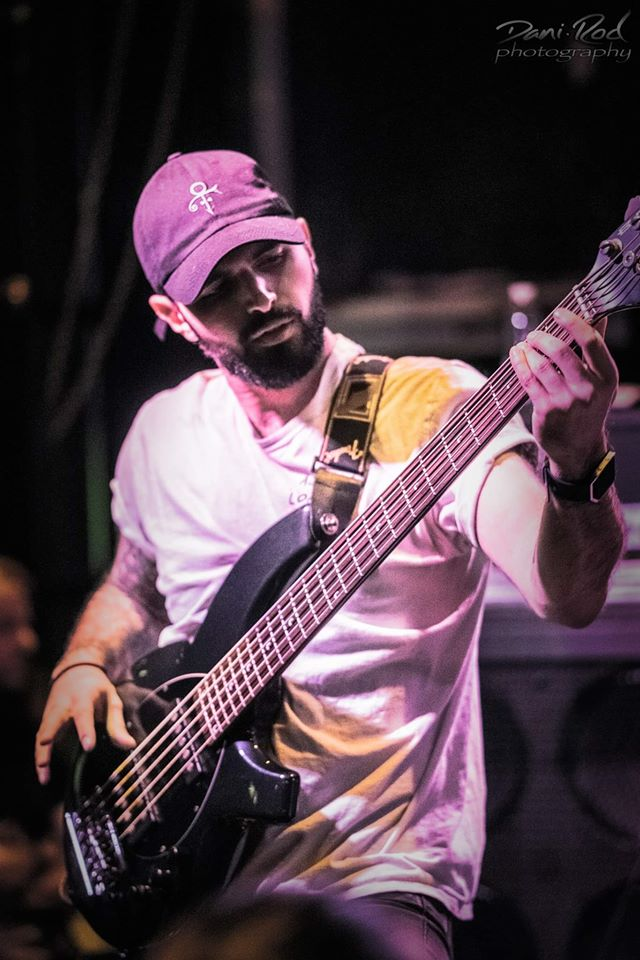
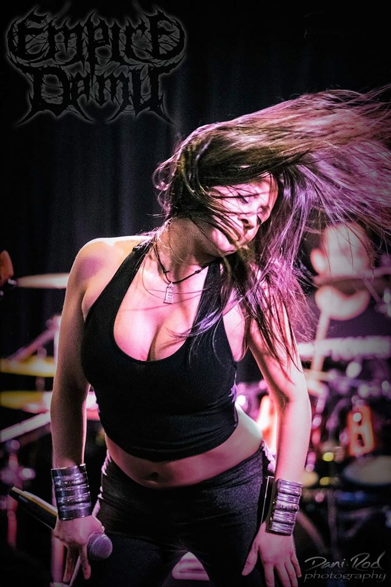

Empire de Mu is the ascension's evolution of extreme music in the "melodic death metal" category.The
lyrics and concept created by Arianne Fleury, are sung in French, English, Spanish and
inspired by James Churchward’s book "Mu the Lost Continent" from "Éditions j'ai lu".
Empire of Mu tells the story of the destruction of the Mu continent, the cataclysm that will
cause the spiritual and scientific fall of the human being at the heart of his ascension.
Spiritual Demise is a tribute to the Muyen and their civilization, a return to the universal
laws and the foundation of human learning on earth.
The complexity and expertise of the two guitars and their solos created by Guillaume
Tremblay and played by David Gagné highlight the cataclysm throughout the album Spiritual Demise.
The tenacity of the blastbeats and Tommy's excessive aggressiveness on the drums provide
the rhythm foundations of the Mu continent, once fallen by a great skillset and experience in
the matter.
The song, the performance on bass, as well as the interlude "Souk", signed Sami El Agha,
contribute to the destruction of humanity’s greatest empire.
The ingenuity in the soprano and rock / metal singing of the front woman Arianne testifies
to the spiritual loss of a world gone at the height of its heyday.
Mu's first Empire album is the start of a new extreme blackened death era. Their music is the destructive
and innovative echo of a masterpiece that will remain current and
heard for many decades to come.
------
Empire de Mu est l’ascension de l’évolution de la musique extrême dans la catégorie « death metal
mélodique ».
Les paroles et concept créés par Arianne Fleury, sont chantés en français, en anglais, en espagnol et
inspirés par
l’ouvrage de James Churchward « Mu le continent perdu » des Éditions J’ai lu.
Empire de Mu raconte l’histoire de la destruction du continent Mu, le cataclysme qui entraînera la chute
spirituelle et scientifique de l’humain en plein cœur de son ascension.
Spiritual Demise est un hommage aux Muyens et à leur civilisation, un retour vers les lois universelles et
le fondement de l’apprentissage de l’homme sur terre.
La complexité et le savoir-faire des deux guitares et leurs solos créés par Guillaume Tremblay et joués
par David Gagné font ressortir le cataclysme tout au long de l’album Spiritual Demise.
La ténacité des blastbeats et la hargne démesurée de Tommy à la batterie assurent les fondements
rythmiques du continent de Mu, jadis déchu par un grand bagage d’expérience en la matière.
Le chant, la performance à la basse, ainsi que l’interlude « Souk », signés Sami El Agha, contribuent à la
destruction
du plus grand empire de l’humanité.
L’ingéniosité dans le chant soprano et rock/metal de la front woman Arianne témoigne de la
perte spirituelle d’un monde disparu en pleine apogé.
Le premier album d’Empire de Mu est le commencement d’une nouvelle époque blackened death extrême. Leur
musique est l’écho destructeur et innovateur d’un chef d’œuvre qui restera actuel et entendu pour les
nombreuses décennies à venir.
------
Tommy Meckinon (Neuraxis, Akurion), Sami El Agha (Faithfull Synthesis, Nephaylite), Guillaume Tremblay
(Faithfull Synthesis), Arianne Fleury (Augury), Dave Gagnė (Hollow, Your Last Wish)


 




